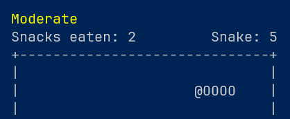

Über mich
Ich arbeite projektbasiert im Bereich IT-Infrastruktur und beschäftige mich vor allem mit Cloud- und Automatisierungsthemen rund um Azure. Am liebsten baue ich Dinge, die sich wiederverwenden lassen, statt Einzellösungen — modular, parametrisch und automatisiert.
Wenn ich nicht am Rechner sitze… sitze ich meistens trotzdem am Rechner
Alles mögliche an spielen wie Minecraft (mittelalterliche Städte), Sim-Racing in Forza Horizon 5 und Stargate SG-1 schauen.
Unterseiten
Ein paar Projekte zum Ausprobieren.
Spacegame — My old React App from studies
Kleines Asteroids-artiges Browser-Spiel mit Highscore, gebaut in React.
Öffnen →terraform-naming — Terraform Registry Module
Modul zur einheitlichen, konventionsbasierten Namensgebung von Azure-Ressourcen in Terraform.
Zur Registry →BICEP__Naming-Module
Modul zur einheitlichen, konventionsbasierten Namensgebung von Azure-Ressourcen in Bicep.
Auf GitHub →
DevOpsScripts.MiniGame — PowerShell Modul
Kleines Minispiel direkt im Terminal, umgesetzt als PowerShell-Modul.
Zur PowerShell Gallery →BicepStarterPipelines — PowerShell Modul
Vorgefertigte Starter-Pipelines für Bicep-Projekte als PowerShell-Modul.
Zur PowerShell Gallery →